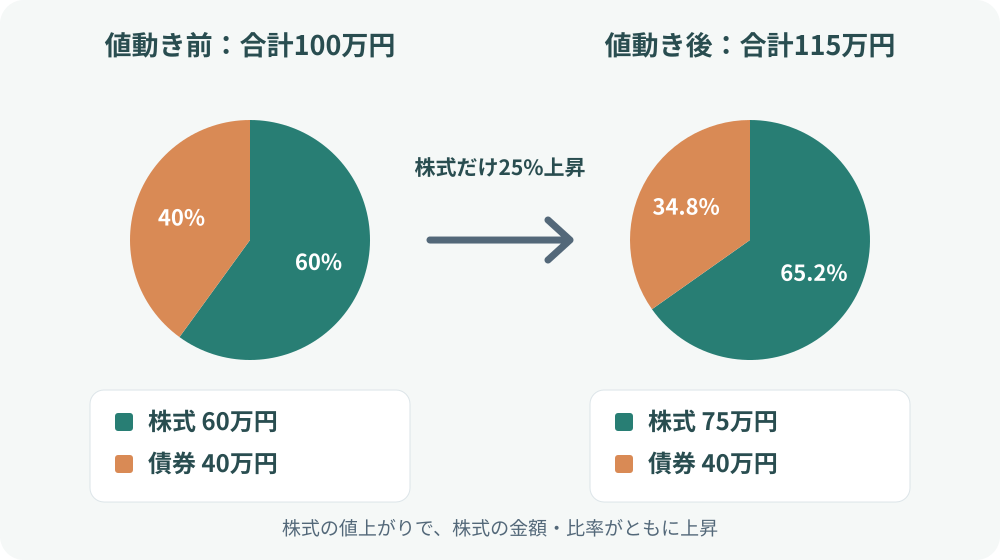

カテゴリツリーを開く
Invest Atlas / ストック原稿
リバランスとは？資産配分を整える方法と判断のポイント
原稿作成：2026年11月3日
株式と債券を一定の割合で保有していても、値上がり・値下がりによって比率は少しずつ変わります。リバランスは、そのずれを確認し、決めていた資産配分に近づける作業です。
1. リバランスとは、資産配分のずれを整えること
資産配分（アセットアロケーション）は、保有資産を株式・債券・現金などにどの割合で配分するかという方針です。たとえば、株式60％・債券40％を目標にしたポートフォリオでも、株式が債券より値上がりすれば、何もしなくても株式の比率が高くなります。
リバランスは、こうした値動きによる比率の変化を確認し、目標とする配分へ戻すことです。相場の先行きを当てる手法ではなく、あらかじめ決めたリスク水準を保つための管理方法と考えると理解しやすくなります。
2. 値動きだけで資産配分は変わる
株式60万円、債券40万円の合計100万円を保有していたとします。その後、株式が25％上昇し、債券の価格が変わらなかった場合、株式は75万円、債券は40万円になります。合計115万円のうち株式は約65.2％となり、当初の60％から上昇しています。

| 項目 | 当初 | 値動き後 |
|---|---|---|
| 株式 | 60万円（60％） | 75万円（約65.2％） |
| 債券 | 40万円（40％） | 40万円（約34.8％） |
| 合計 | 100万円 | 115万円 |
この例では、株式の比率が上がった分だけポートフォリオの値動きも株式市場の影響を受けやすくなっています。目標の60対40に戻すなら、合計115万円の60％にあたる69万円を株式、46万円を債券にします。株式を6万円売り、債券を6万円買う計算です。
3. リバランスの方法
方法A：値上がりした資産を売り、比率の低い資産を買う
目標比率に戻るように売買する方法です。上の例なら株式を6万円売り、債券を6万円買います。比率を直接戻せますが、課税口座では売却益への課税が発生する場合があり、売買手数料やスプレッドも確認が必要です。
方法B：新しい積立金を比率の低い資産へ多く配分する
売却せず、今後の積立先を調整する方法です。株式の比率が高くなったら、しばらく債券を多めに買うことで、全体の比率を目標に近づけます。追加資金がある場合に使いやすく、売却を避けられる一方、比率が戻るまで時間がかかることがあります。
方法C：分配金・利息・配当の再投資先を調整する
受け取った分配金や利息を、比率が低下した資産へ回す方法です。資金の流入が少ない場合でも、保有資産を売らずに調整する助けになります。
バランス型投資信託なら、内部で調整する商品もある
バランス型投資信託の中には、株式・債券などの配分をあらかじめ定め、運用会社がファンド内部でリバランスするものがあります。このタイプでは、投資家が保有商品の売買で配分を整えなくても、ファンド内で目標配分に近づける運用が行われます。
一方、株式ファンドと債券ファンドを別々に保有する場合は、投資家自身が全体の比率を確認し、必要に応じて調整します。バランス型でも配分や調整方針は商品ごとに異なるため、目論見書や運用報告書で確認しましょう。
4. いつリバランスする？
| 方式 | 確認方法 | 特徴 |
|---|---|---|
| 定期方式 | 半年・1年など決めた間隔で確認 | 管理が簡単。小さなずれでも売買する可能性 |
| 乖離幅方式 | 目標比率から一定幅ずれたら確認 | 大きなずれに絞れる。確認・計算が必要 |
| 定期＋乖離幅 | 定期的に確認し、大きなずれだけ調整 | 管理負担と調整頻度の折衷 |
乖離幅を使う場合の考え方（例）
たとえば目標を株式60％・債券40％とし、「株式比率が目標から5ポイント以上ずれたら調整を検討する」というルールを置く方法があります。この場合、株式が65％以上、または55％以下になったときが確認の目安です。5ポイントは説明用の例であり、すべての人に適した基準ではありません。
| 株式比率 | 目標60％との差 | 例のルールでの扱い |
|---|---|---|
| 62％ | ＋2ポイント | 通常は様子を見る |
| 65％ | ＋5ポイント | 調整を検討 |
| 68％ | ＋8ポイント | 調整を検討 |
| 55％ | －5ポイント | 調整を検討 |
「5ポイントのずれ」と「目標比率に対して5％ずれた」は意味が異なります。60％を基準に相対5％のずれなら57％または63％ですが、5ポイントのずれなら55％または65％です。ルールを決めるときは、どちらを指すのか明確にします。
定期方式と乖離幅方式、どちらを選ぶ？
定期方式は「年1回、誕生月に確認」のように予定を固定できるため、管理が簡単です。乖離幅方式は比率が大きくずれたときだけ調整するため、小さな売買を減らせる一方、定期的な比率確認が必要です。実務では「年1回確認し、一定以上ずれていれば調整」のように組み合わせると、確認を習慣化しつつ過度な売買を避けやすくなります。
「年1回が正解」「5％ずれたら必ず売買」といった共通の正解があるわけではありません。資産の種類、値動き、売買コスト、税金、積立額によって適切な管理方法は変わります。頻繁に売買して細かく比率を合わせるほど、費用や手間が増える点も考慮しましょう。
調整後は目標比率に戻る
先ほどの115万円の例では、株式75万円・債券40万円から、株式を6万円売って債券を6万円買うと、株式69万円・債券46万円になります。合計115万円に対して株式60％・債券40％となり、目標配分に戻ります。
ただし、比率を正確に戻すことだけが目的ではありません。積立金で調整できるか、売却に伴う税金・費用が大きくないか、そもそも目標配分が今の自分に合っているかも合わせて判断します。
5. 税金・費用と注意点
- 課税口座：値上がりした資産を売却すると、利益に税金がかかる場合があります。
- NISA口座：口座内の売却益は非課税ですが、売却した商品の買い直しや年間投資枠・非課税保有限度額の扱いを確認します。
- 売買コスト：信託財産留保額、売買手数料、ETFのスプレッドなど商品ごとの費用を確認します。
- 目標配分そのもの：生活状況や投資期間が変わったなら、機械的に元の比率へ戻す前に目標配分を見直す必要があります。
リバランスは、損失を防ぐ仕組みではありません。株式・債券の両方が下落すれば、比率を整えても資産全体は減ることがあります。また、値上がり資産を売ることが常に有利とは限らず、税金や将来の資金需要も含めて判断します。
6. 実際に進める手順
- 株式・債券・現金など、現在の資産額を確認する。
- 目標とする資産配分を確認する。目標が曖昧なら、先にリスク許容度と投資期間を整理する。
- 現在の比率と目標比率の差を計算する。
- 積立金の配分変更で調整できるかを先に検討する。
- 売却が必要なら、税金・費用・NISA枠への影響を確認して実行する。
まとめ
リバランスは、値動きで変化した資産配分を目標に近づけ、ポートフォリオのリスク水準を管理する方法です。売買だけでなく、積立金や分配金の配分を変える方法もあります。実施頻度や乖離幅に一律の正解はなく、税金・費用・投資方針を踏まえて、続けやすいルールを決めておくことが大切です。
参考資料
※この原稿は監査前のストック候補です。制度・税制・商品仕様等は公開前に最新の公式資料で再確認してください。